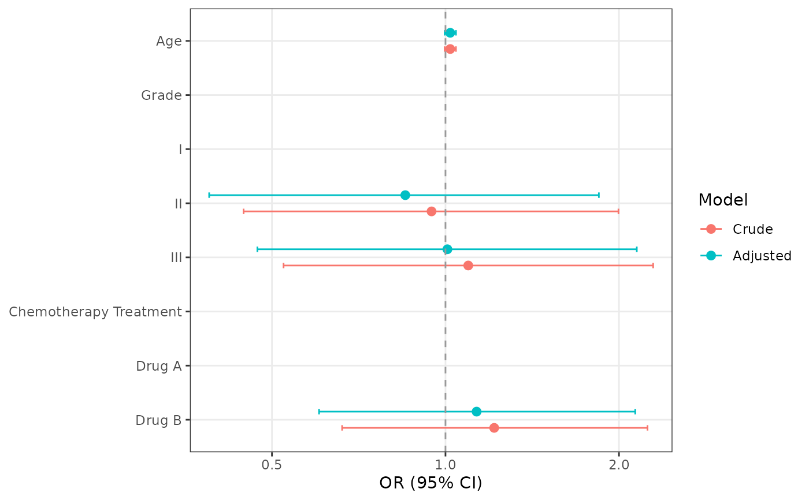

Convert gtsummary regression tables to forest data
Source:R/as_forest_data_gtsummary.R
as_forest_data_gtsummary.RdStandardizes gtsummary regression tables into forest_data, keeping the
row structure of the table. One method covers
gtsummary::tbl_regression(), gtsummary::tbl_uvregression(),
gtsummary::tbl_merge(), gtsummary::tbl_stack(), and other gtsummary
tables built from them, such as gtsummary::tbl_strata(), because they all
share the gtsummary class and table_body layout.
Usage
# S3 method for class 'gtsummary'
as_forest_data(
data,
...,
term_labels = NULL,
exponentiate = NULL,
conf.level = NULL,
sort_terms = c("none", "descending", "ascending"),
p_method = NULL
)Arguments
- data
A
gtsummaryregression table, such as atbl_regression,tbl_uvregression,tbl_merge, ortbl_stackobject.- ...
Not used; must be empty.
- term_labels
Optional named vector used to relabel variables (by variable name, for example
c(age = "Age (years)")) or levels (by the displayed level label).- exponentiate
NULLkeeps the table's scale.TRUEconverts log-scale estimates to ratios andFALSEconverts ratios to the log scale.- conf.level
NULLuses the confidence level used to build the table. A number must match it.- sort_terms
Must be
"none"because the table's row structure is preserved. Retained soggforestplot()andbind_forest_models()can pass it consistently.- p_method
NULLchooses"overall"when the table has global p-values and"level"otherwise. Supply"overall"or"level"to override.
Value
A forest_data object with subgroup, row_type, n, events,
and p.value columns derived from the table. For merged tables, group
identifies the source table.
Details
Estimates, intervals, p-values, labels, and counts are read from the
table's table_body, so they match the printed table:
Categorical variables become subgroup blocks: the variable label is the header, levels are indented beneath it, and reference levels are shown as reference rows without plot geometry.
Continuous variables, single-row (
show_single_row) variables, and interaction terms with one row become standalone estimates.Merged tables (
gtsummary::tbl_merge()) become grouped estimates that share rows. The spanning headers, such as"**Crude**", become the"Model"group labels.Stacked tables with
group_headerand multinomial outcome groups become facets.Per-row observation and event counts (
n_obs,n_event) are mapped tonandeventswhen present.
With the default p_method = NULL, p-values from
gtsummary::add_global_p() are shown on the subgroup header
("overall"); otherwise each level keeps its own p-value ("level").
In "overall" mode, categorical variables without a global p-value show
no p-value.
The effect scale follows the table's exponentiate setting and
coefficient type: exponentiated tables are ratios on a log10 axis, while
unexponentiated logistic, Poisson, and Cox tables are on the log scale. The
effect label is the table's estimate column header, such as "OR" or
"HR".
Examples
if (requireNamespace("gtsummary", quietly = TRUE) &&
requireNamespace("broom.helpers", quietly = TRUE)) {
trial <- gtsummary::trial
fit <- glm(response ~ age + grade + trt, data = trial, family = binomial())
tbl <- gtsummary::tbl_regression(fit, exponentiate = TRUE)
ggforestplot(tbl) +
add_forest_table(columns = c("term", "n", "estimate", "ci", "p"))
# Crude and adjusted estimates side by side
crude <- gtsummary::tbl_uvregression(
trial[c("response", "age", "grade", "trt")],
method = glm,
y = response,
method.args = list(family = binomial),
exponentiate = TRUE
)
merged <- gtsummary::tbl_merge(
list(crude, tbl),
tab_spanner = c("**Crude**", "**Adjusted**")
)
ggforestplot(merged)
}
